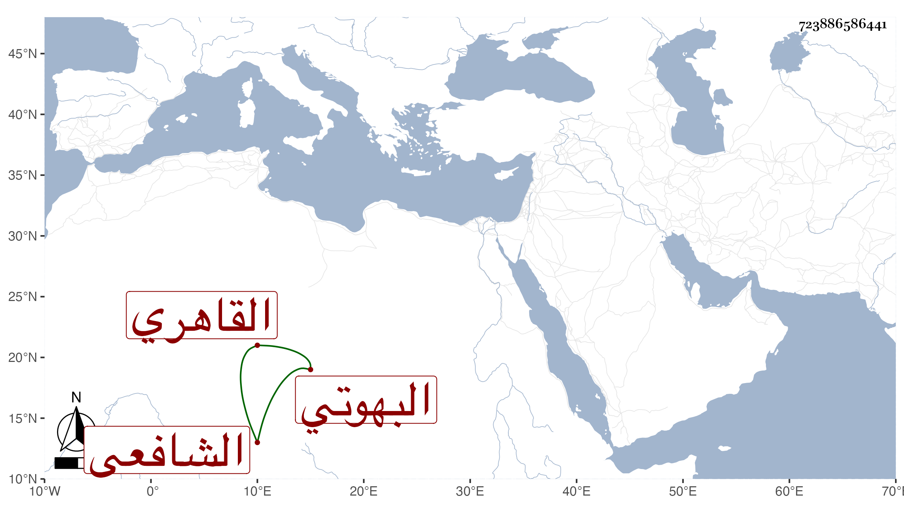

0902Sakhawi.DawLamic.ITO20230111-ara1.EIS1600.723886586441
Biography ID: 723886586441
327
عمر بن عثمان بن خضر بن جامع السراج البهوتي الأصل القاهري الشافعي ويعرف بابن جامع . ولد سنة ثلاث وستين وثمانمائة تقريبا بحارة السقاءين قريبا من بركة الناصري . ونشأ فحفظ القرآن والمنهاج وجمع الجوامع وألفية النحو والحديث ، وعرض على جماعة واشتغل في الفقه عند البكري وابن قاسم وقرأ على من دونهما كالكمال الطويل والقمني في الأصول عند الكمال بن أبي شريف وتميز في الفقه وجلس شاهدا ثم أنه لازم دروس الشافعي فأذن له في الجلوس ببابه بل صيره أمين الحكم حين التضييق على جماعته وتمول في أسرع وقت بعد فقره فيما قيل وكان جده إمام جامع سنقر هناك وأحد الصوفية السعيدية والبيبرسية فأجلس حفيده هذا في حانوت هناك خرازا كما كان هو أولا ومهر فيها فلما مات أخرجتا عنه بحجة حرفته فسعى حتى أعيدتا إليه وترك الخرز من ثم ، ثم ترقى إلى أمانة الحكم وسعى بالمهتار رمضان في شهادة الكسوة بعد موت الشهاب البيجوري فكان محركا لإعادة الترسيم على جماعة الشافعي حتى عملت المصلحة ولم يعط شيئا .
